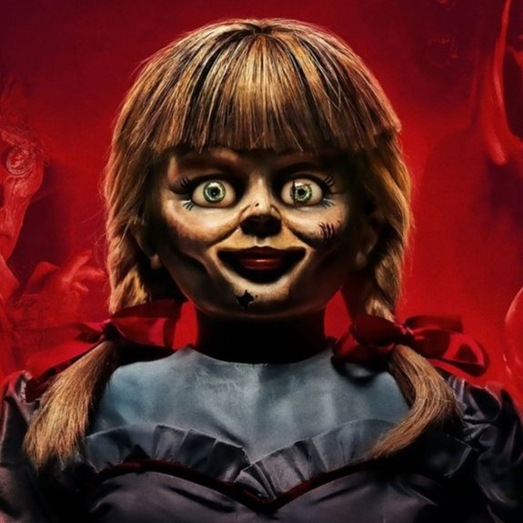
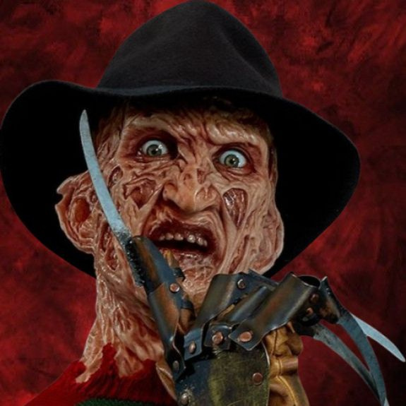
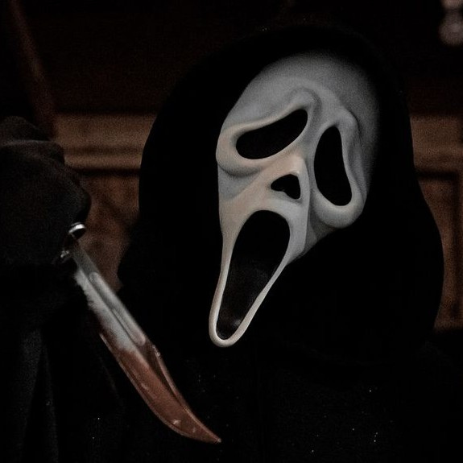
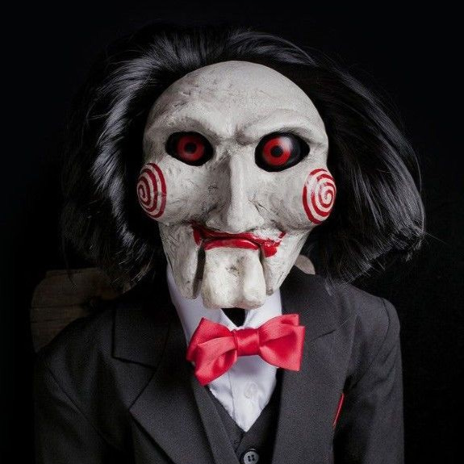
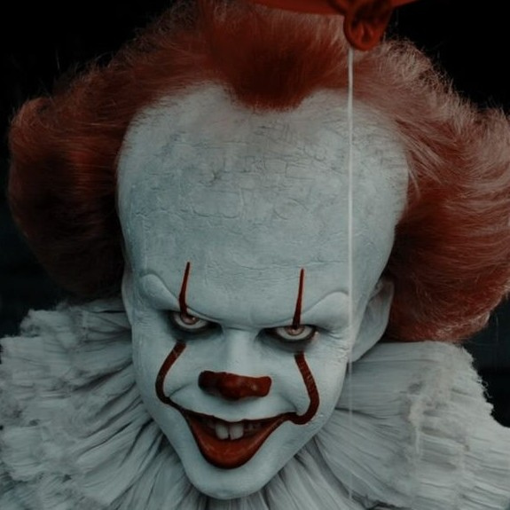
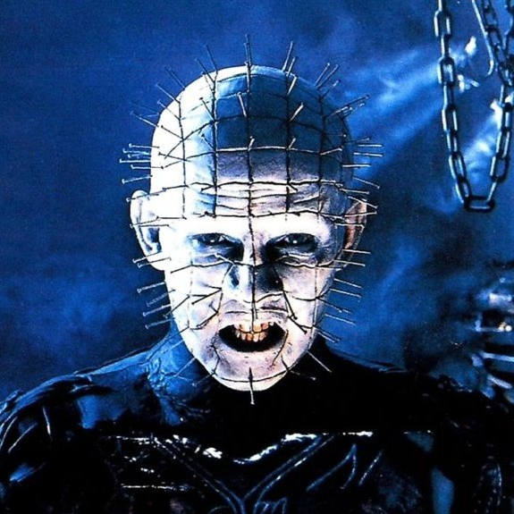
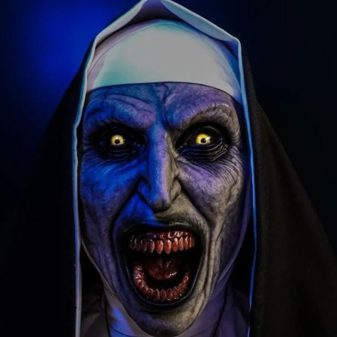

-
Annabelle
Uma boneca de pano com olhos grandes e sorriso simpático, se comporta de forma estranha, como trocar de lugar sozinha. Uma boneca que é instrumento de um poderoso demônio chamado Malthus, que é capaz de males indizíveis.
ATK/ 3500 DEF/ 2400 -
Freddy Krueger
Incorpóreo e invisível para quem não está sonhando, criador de pesadelos, que usa para ferir e matar suas vítimas. Desfigurado, com uma luva com navalhas, é psicopata e Serial killer sobrenatural.
ATK/ 4500 DEF/ 4000 -
Ghostface
É praticamente mudo, frequentemente liga para as vítimas, ameaçando-as ou fazendo perguntas sobre filmes de terror. Persegue as vítimas de forma que lembra os filmes de terror. É um assassino furtivo, que se aproxima das vítimas sem ser visto. Ele é um assassino que usa uma máscara de borracha inspirada na pintura O Grito, de Edvard Munch.
ATK/ 2400 DEF/ 2100 -
Jigsaw
Ele é um serial killer que cria jogos mortais para punir as pessoas e ensiná-las a valorizar a vida. Jigsaw é um ex-engenheiro civil que fundou uma fundação para ajudar pessoas carentes. Ele tem um tumor inoperável no lobo frontal e morre de câncer de cólon. Ele sempre dá opções às vítimas, para que elas possam escolher entre a vida e a morte. Jigsaw afirma que não deve ser identificado como assassino. Seu desejo é que seu legado seja mantido e que o trabalho de testar a humanidade continue.
ATK/ 2600 DEF/ 2150 -
Pennywise
Pennywise é uma criatura sobrenatural e malévola. Pennywise é capaz de mudar de forma, mas geralmente aparece como um palhaço para atrair crianças. Ele é uma entidade transdimensional que ataca as crianças de Derry aproximadamente a cada 27 anos. Uma criatura misteriosa e extremamente maligna que veio de uma dimensão desconhecida fora do universo. Um ser que se alimenta dos medos das crianças.
ATK/ 3500 DEF/ 3000 -
Pinhead
Um Cenobita que se especializa em causar sofrimento. Um explorador que se entrega ao prazer e à dor, um assassino invocador que pode possuir projéteis em cadeia. Um personagem que pode conjurar correntes para prender sobreviventes, ele pode usar a configuração do lamento para torturar os sobreviventes, e também usar a armadura para absorver a energia de ataques físicos e aumentar a sua força.
ATK/ 4200 DEF/ 3900 -
Valak
Valak é descrito como um demônio que se manifesta como uma freira demoníaca. Ele é frequentemente retratado cavalgando um dragão de duas cabeças e comandando 30 legiões de demônios. Ele é um demônio que já foi um anjo, mas foi rejeitado por Deus e aprisionado no Inferno. Valak está em busca de uma relíquia sagrada relacionada com Santa Lúcia.
ATK/ 3600 DEF/ 3000